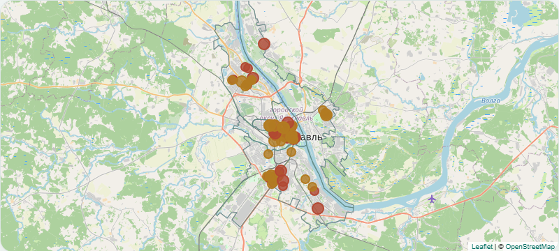

Ярославль и Рыбинск · табачные точки
Близость к образовательному объекту - основание для проверки сведений. Муниципальные запретные границы ещё не установлены: акт находится на стадии проекта (публичное обсуждение до 30.10.2026); расстояние менее 100 м само по себе не устанавливает нарушение.
Районы›13районовТочки и материалы по территорииПриоритет проверки›13парКонтур, адрес лицензии и менее 100 м: технический отборТорговые точки›101точекНесколько соседств могут относиться к одному магазинуОбразовательные лицензии›45адресовОба объекта, контур и прямой отрезокСети и названия›52названийСравнение по вывескам, без вывода об общем владельцеКачество исходных данных›6конфликтовПроверь идентичность объектов и способ измерения
Дзержинский12
Заволжский6
Кировский20
Красноперекопский11
Ленинский9
Фрунзенский7
Рыбинск11
Переславль-Залесский8
Ростов3
Тутаев8
Углич2
Гаврилов-Ям2
Данилов2
Любим0
Мышкин0
Пошехонье0
Приоритет 13Остальные 147
1 соседство23 и более
58 из 160 пар с подтверждённым адресом
Проверен адрес образовательной деятельностиКарта и измерения›160пар
Развернуть карту ↗Табачный капитанХайзенбергМагазин табачной продукцииBag-табак
До контура 112Между точками 48
Реестр исходных сведений
Интерактивные разделы требуют JavaScript. Без него доступны полный реестр и официальные источники.
| Случай | Район | Точка | Образование | Метры | Лицензия |
|---|---|---|---|---|---|
| YAR-e879ca8e3bc9 | Дзержинский район | Хайзенберг улица Урицкого, 63 | Детский сад № 222 улица Урицкого 61 | 70.1 м До контура | Действующая лицензия; адрес деятельности сопоставлен |
| YAR-e81eed281a21 | Дзержинский район | Табачный капитан, магазин улица Урицкого, 3а | Детский сад №211 "Клубничка" улица Блюхера 46А | 95.7 м До контура | Действующая лицензия; адрес деятельности сопоставлен |
| YAR-924bf535df40 | Дзержинский район | Табачная Империя, торговая компания улица Труфанова, 24в ст2 | Центр спортивных единоборств улица Панина, 36а | 98.1 м Между точками | Актуальная лицензия по этому адресу не подтверждена |
| YAR-2c2a9a0fa4e2 | Дзержинский район | Магазин табачных товаров Тутаевское шоссе, 66Б киоск | №127 "Брусничка" Тутаевское шоссе, 66а | 98.8 м До контура | Действующая лицензия; адрес деятельности сопоставлен |
| YAR-82814a3a9555 | Дзержинский район | Nargile, магазин табачных изделий Тутаевское шоссе, 93Б | Учебный центр РЖД Адрес не установлен | 99.5 м До контура | Адрес образовательного объекта не установлен; лицензия не сопоставлена |
| YAR-d32296f8b449 | Дзержинский район | Bag-табак, магазин табака Ленинградский проспект, 40а | Детский сад № 222 улица Урицкого 61 | 108.2 м До контура | Действующая лицензия; адрес деятельности сопоставлен |
| YAR-808220e09525 | Дзержинский район | Табачный капитан, магазин улица Урицкого, 3а | Детский сад №32 "Тополек" улица Блюхера 60 | 117.1 м До контура | Актуальная лицензия по этому адресу не подтверждена |
| YAR-a261262b45d8 | Дзержинский район | Nargile, магазин табачных изделий улица Труфанова, 19 | Средняя школа №58 улица Труфанова 21А | 128.5 м До контура | Действующая лицензия; адрес деятельности сопоставлен |
| YAR-164279fece8e | Дзержинский район | Магазин по продаже электронных сигарет Ленинградский проспект, 49а | Детский сад №135 улица Урицкого 65А | 129.9 м До контура | Действующая лицензия; адрес деятельности сопоставлен |
| YAR-03f7535089f6 | Дзержинский район | Табачная Империя, торговая компания улица Урицкого, 18/2 | Детский сад №126 "Журавлик" улица Урицкого 19 | 138.7 м До контура | Действующая лицензия; адрес деятельности сопоставлен |
| YAR-3fffb28b6c75 | Дзержинский район | Табачный капитан, магазин Ленинградский проспект, 71 к1 киоск | Детский сад №120 проспект Дзержинского 33А | 140.8 м До контура | Действующая лицензия; адрес деятельности сопоставлен |
| YAR-540c8b6711b8 | Дзержинский район | Табачный капитан, магазин Ленинградский проспект, 71 к1 киоск | Детский сад №15 проспект Дзержинского 18 | 143.0 м До контура | Действующая лицензия; адрес деятельности сопоставлен |
| YAR-8306ac874c52 | Дзержинский район | Свит None | Детский сад №126 "Журавлик" улица Урицкого 19 | 143.2 м До контура | Действующая лицензия; адрес деятельности сопоставлен |
| YAR-9763fd1e5f77 | Дзержинский район | Магазин табачной продукции Ленинградский проспект, 40Б | Детский сад № 222 улица Урицкого 61 | 149.3 м До контура | Действующая лицензия; адрес деятельности сопоставлен |
| YAR-1ea97bbc0c2c | Заволжский район | Наш Табак, магазин табачной продукции проспект Машиностроителей, 9а | Спортивно-адаптивная школа проспект Машиностроителей, 9а | 61.0 м Между точками | Актуальная лицензия по этому адресу не подтверждена |
| YAR-51eae37fb409 | Заволжский район | Пар&Дым Ранняя улица, 8 | Детский сад №20 Ранняя улица, 6а | 78.5 м До контура | Действующая лицензия; адрес деятельности сопоставлен |
| YAR-de71e4280b1a | Заволжский район | Bag-табак, магазин табака проспект Машиностроителей, 9 | Спортивно-адаптивная школа проспект Машиностроителей, 9а | 102.8 м Между точками | Актуальная лицензия по этому адресу не подтверждена |
| YAR-6723d70fdc1d | Заволжский район | Магазин табачной продукции проспект Машиностроителей, 11Б | Детская школа искусств им. М.А. Балакирева проспект Машиностроителей, 11а | 115.2 м До контура | Действующая лицензия; адрес деятельности сопоставлен |
| YAR-74333a2fcf30 | Заволжский район | Пар&Дым Ранняя улица, 8 | д/с №142 "Солнышко" Ранняя улица 12А | 122.1 м До контура | Действующая лицензия; адрес деятельности сопоставлен |
| YAR-22ed3df2c744 | Заволжский район | Пар&Дым None | Детская школа искусств им. М.А. Балакирева проспект Машиностроителей, 11а | 130.3 м До контура | Действующая лицензия; адрес деятельности сопоставлен |
| YAR-ad9b1ec54c8c | Заволжский район | Миссис Пафф проспект Машиностроителей, 2Б | Средняя школа №2 проспект Авиаторов, 84 | 141.4 м До контура | Действующая лицензия; адрес деятельности сопоставлен |
| YAR-de52a841fc53 | Заволжский район | Пар&Дым None | Детская школа искусств им. М.А. Балакирева, Художественное отделение проспект Машиностроителей, 15 к2 | 149.9 м Между точками | Актуальная лицензия по этому адресу не подтверждена |
| YAR-b28dcacb7012 | Кировский район | Хайзенберг улица Победы, 38/27 | Лёгкий Старт, клуб художественной гимнастики и акробатики улица Победы, 38/27 | 28.2 м Между точками | Актуальная лицензия по этому адресу не подтверждена |
| YAR-12adacfc75a5 | Кировский район | Дудка, магазин табачных изделий Свободы, 89 к3 | СШОР №8 им. В.Г. Беляйкова Свободы, 89 | 67.6 м Между точками | Актуальная лицензия по этому адресу не подтверждена |
| YAR-eb3bf3cc07f1 | Кировский район | Пармаркет, специализированный магазин Комсомольская улица, 12 | Ярославский государственный университет им. П. Г. Демидова, экономический факультет Комсомольская улица, 3 | 75.4 м Между точками | Действующая лицензия; адрес деятельности сопоставлен |
| YAR-0c7df4e8d13f | Кировский район | Хайзенберг улица Победы, 38/27 | СШОР №4 улица Свердлова, 27 | 82.2 м Между точками | Актуальная лицензия по этому адресу не подтверждена |
| YAR-9b6bf943b76a | Кировский район | Nargile, магазин табачных изделий Первомайская улица, 33 | Ярославский государственный университет им. П. Г. Демидова, экономический факультет Комсомольская улица, 3 | 82.5 м Между точками | Действующая лицензия; адрес деятельности сопоставлен |
| YAR-ae4e06df6b35 | Кировский район | Vape Style, магазин электронных испарителей улица Кирова, 7/8 | СШОР №20, школа бокса улица Максимова, 9 | 86.5 м Между точками | Актуальная лицензия по этому адресу не подтверждена |
| YAR-f065a58bb551 | Кировский район | Vape Style, магазин электронных испарителей улица Кирова, 7/8 | СШОР по легкой атлетике улица Максимова, 9 | 86.5 м Между точками | Актуальная лицензия по этому адресу не подтверждена |
| YAR-bfe71de2a84c | Кировский район | Центр табака Свободы, 40 | Колокольчик, детский сад Свободы, 41Б | 98.2 м До контура | Актуальная лицензия по этому адресу не подтверждена |
| YAR-c009d39e2687 | Кировский район | Табачный капитан, магазин Советская улица, 57а | Рябинка улица Победы 17А | 98.3 м До контура | Действующая лицензия; адрес деятельности сопоставлен |
| YAR-7741fefd2490 | Кировский район | Хайзенберг Свободы, 36 | Колокольчик, детский сад Свободы, 41Б | 98.4 м До контура | Актуальная лицензия по этому адресу не подтверждена |
| YAR-76e753e1b723 | Кировский район | Smoking Shop улица Богдановича, 7 | Ладушка, частный детский сад Угличская улица, 6а | 99.6 м Между точками | Актуальная лицензия по этому адресу не подтверждена |
| YAR-ebccd4eb9871 | Кировский район | Smoking Shop Большая Октябрьская улица, 73 | Детский сад улица Володарского, 3а | 103.0 м До контура | Действующая лицензия; адрес деятельности сопоставлен |
| YAR-54ca9bc843ba | Кировский район | Bag-табак, магазин табака Комсомольская улица, 20 | Театральный институт Первомайская улица 43 | 106.6 м До контура | Актуальная лицензия по этому адресу не подтверждена |
| YAR-3d52658c8cdf | Кировский район | Nargile, магазин табачных изделий Первомайская улица, 33 | Театральный институт Первомайская улица 43 | 107.1 м До контура | Актуальная лицензия по этому адресу не подтверждена |
| YAR-3d2e5cc0ac4a | Кировский район | Хайзенберг Комсомольская улица, 16 | Театральный институт Первомайская улица 43 | 109.2 м До контура | Актуальная лицензия по этому адресу не подтверждена |
| YAR-865ec0feb7cd | Кировский район | МосТабак, магазин Свободы, 14 | Ярославский государственный университет им. П. Г. Демидова, юридический факультет улица Собинова, 36а | 113.9 м Между точками | Действующая лицензия; адрес деятельности сопоставлен |
| YAR-09bfc526f905 | Кировский район | VapeMax, магазин улица Победы, 43/61 | Средняя школа №7 Адрес не установлен | 116.4 м До контура | Адрес образовательного объекта не установлен; лицензия не сопоставлена |
| YAR-ef82533ae7c1 | Кировский район | Хайзенберг Свободы, 36 | Колокольчик, детский сад улица Свободы 41Б | 119.0 м До контура | Актуальная лицензия по этому адресу не подтверждена |
| YAR-0eb1c551ac4e | Кировский район | Центр табака Свободы, 40 | Колокольчик, детский сад улица Свободы 41Б | 120.8 м До контура | Актуальная лицензия по этому адресу не подтверждена |
| YAR-3bcc77a20d09 | Кировский район | Табачный капитан, магазин Советская улица, 57а | Золотая рыбка, детский сад №7 улица Победы, 17а | 124.7 м Между точками | Действующая лицензия; адрес деятельности сопоставлен |
| YAR-adc2c0544fed | Кировский район | Табачный капитан, магазин проспект Октября, 31а | Градостроительный колледж проспект Октября 25/55 | 125.9 м До контура | Актуальная лицензия по этому адресу не подтверждена |
| YAR-d2c40ce7461c | Кировский район | Nargile, магазин табачных изделий улица Собинова, 37 | Московский международный колледж цифровых технологий Академия Топ, филиал в г. Ярославль Свободы, 1/2 | 127.3 м Между точками | Актуальная лицензия по этому адресу не подтверждена |
| YAR-7b444da9de0a | Кировский район | Nargile, магазин табачных изделий улица Собинова, 37 | Ярославский государственный университет им. П. Г. Демидова, юридический факультет улица Собинова, 36а | 129.9 м Между точками | Действующая лицензия; адрес деятельности сопоставлен |
| YAR-50efb833bd3f | Кировский район | Пармаркет, специализированный магазин Комсомольская улица, 12 | Московский международный колледж цифровых технологий Академия Топ, филиал в г. Ярославль Свободы, 1/2 | 132.1 м Между точками | Актуальная лицензия по этому адресу не подтверждена |
| YAR-58aacc827224 | Кировский район | HookahMarket улица Ушинского, 24 | Православная гимназия им. И. Брянчанинова улица Трефолева 20А | 133.3 м До контура | Актуальная лицензия по этому адресу не подтверждена |
| YAR-131f3590a996 | Кировский район | Vape Style, магазин электронных испарителей улица Кирова, 7/8 | Ярославский государственный университет им. П. Г. Демидова, факультет иностранных языков улица Кирова, 8/10 | 133.6 м Между точками | Актуальная лицензия по этому адресу не подтверждена |
| YAR-29692642159a | Кировский район | Vape Style, магазин электронных испарителей улица Кирова, 7/8 | Ярославский государственный университет им. П. Г. Демидова, институт государственного, муниципального и корпоративного менеджмента улица Кирова, 8 | 133.6 м Между точками | Актуальная лицензия по этому адресу не подтверждена |
| YAR-3f0305b840bd | Кировский район | Vape Style, магазин электронных испарителей улица Кирова, 7/8 | Ярославский государственный университет им. П. Г. Демидова, приемная комиссия улица Кирова, 8 | 133.6 м Между точками | Актуальная лицензия по этому адресу не подтверждена |
| YAR-5ec54f56a754 | Кировский район | Vape Style, магазин электронных испарителей улица Кирова, 7/8 | Ярославский государственный университет им. П. Г. Демидова, физический факультет улица Кирова, 8/10 | 133.6 м Между точками | Актуальная лицензия по этому адресу не подтверждена |
| YAR-113db3ad910b | Кировский район | Табачный капитан, магазин проспект Ленина, 55/1 | Образовательный объект без названия Адрес не установлен | 133.9 м До контура | Адрес образовательного объекта не установлен; лицензия не сопоставлена |
| YAR-c0abd4f87975 | Кировский район | Магазин табачной продукции улица Победы, 5/3 | Заочный финансово-экономический институт Кооперативная улица 12А | 136.9 м До контура | Актуальная лицензия по этому адресу не подтверждена |
| YAR-9b5598e6f5a0 | Кировский район | Хайзенберг Свободы, 36 | Город в облаках, семейный клуб Свободы, 27 к2 | 138.8 м Между точками | Актуальная лицензия по этому адресу не подтверждена |
| YAR-ff9c4dfcd083 | Кировский район | Табачный капитан, магазин улица Городской вал, 14а киоск | Средняя Школа №1 улица Салтыкова-Щедрина, 75 | 140.3 м До контура | Действующая лицензия; адрес деятельности сопоставлен |
| YAR-fdc200001578 | Кировский район | Табачный капитан, магазин проспект Ленина, 55/1 | Детский сад №40 улица Богдановича 18 | 145.1 м До контура | Действующая лицензия; адрес деятельности сопоставлен |
| YAR-63695f49c038 | Кировский район | Табачный капитан, магазин улица Городской вал, 14а киоск | Детская школа искусств №1 улица Городской вал, 1 | 146.4 м Между точками | Действующая лицензия; адрес деятельности сопоставлен |
| YAR-294283bc9aa4 | Кировский район | Табачный капитан, магазин улица Городской вал, 14а киоск | Медвежонок, детский сад №236 улица Лисицына, 11 | 149.6 м До контура | Действующая лицензия; адрес деятельности сопоставлен |
| YAR-d0bb6ffaafb9 | Красноперекопский район | Reek White, магазин табачных изделий Московский проспект, 100а | Детский сад №36 Адрес не установлен | 81.4 м До контура | Адрес образовательного объекта не установлен; лицензия не сопоставлена |
| YAR-f0793f6bcf82 | Красноперекопский район | Табачный капитан, магазин улица Гагарина, 43Б | Детский сад №243 улица Зелинского, 2а | 88.6 м До контура | Действующая лицензия; адрес деятельности сопоставлен |
| YAR-3c4d796272d3 | Красноперекопский район | Табачный капитан, магазин Московский проспект, 82Б киоск | Детский сад № 218 улица Писемского 52А | 89.8 м До контура | Действующая лицензия; адрес деятельности сопоставлен |
| YAR-5d503c0cdb17 | Красноперекопский район | Sb табак улица Носкова, 31 | Школа №40 улица Будкина, 11 | 120.9 м До контура | Действующая лицензия; адрес деятельности сопоставлен |
| YAR-d9e7443154e1 | Красноперекопский район | Bag-табак, магазин табака Московский проспект, 90 | Ярославский филиал ПГУПС Московский проспект 151 | 122.2 м До контура | Актуальная лицензия по этому адресу не подтверждена |
| YAR-e353e6d89722 | Красноперекопский район | Табачный капитан, магазин улица Гагарина, 43Б | Лицей №86 улица Зелинского, 6 | 124.5 м До контура | Актуальная лицензия по этому адресу не подтверждена |
| YAR-63a50ec4b24e | Красноперекопский район | Табачный остров Московский проспект, 108 | Детский сад №36 Адрес не установлен | 125.2 м До контура | Адрес образовательного объекта не установлен; лицензия не сопоставлена |
| YAR-188c4c24cb60 | Красноперекопский район | Хайзенберг улица Гагарина, 28 | Детский сад №243 улица Зелинского, 2а | 126.0 м До контура | Действующая лицензия; адрес деятельности сопоставлен |
| YAR-223353ffa933 | Красноперекопский район | Хайзенберг Московский проспект, 98в | Детский сад №36 Адрес не установлен | 128.0 м До контура | Адрес образовательного объекта не установлен; лицензия не сопоставлена |
| YAR-07770f3a27ed | Красноперекопский район | Bag-табак, магазин табака Московский проспект, 90 | Ярославский государственный технический университет, машиностроительный институт Московский проспект, 88 | 131.0 м Между точками | Действующая лицензия; адрес деятельности сопоставлен |
| YAR-eac38b0b3874 | Красноперекопский район | Bag-табак, магазин табака Московский проспект, 90 | Ярославский государственный технический университет, инженерно-экономический институт Московский проспект, 88 | 131.0 м Между точками | Действующая лицензия; адрес деятельности сопоставлен |
| YAR-9f4994b45181 | Красноперекопский район | Табачная лавка улица Гагарина, 39 киоск | Детский сад №243 улица Зелинского, 2а | 131.1 м До контура | Действующая лицензия; адрес деятельности сопоставлен |
| YAR-516d4272c50d | Красноперекопский район | Smoking Shop улица Титова, 10в | Детский сад №50 улица Рыкачёва, 22 | 144.9 м До контура | Действующая лицензия; адрес деятельности сопоставлен |
| YAR-d4a6ed757bd2 | Красноперекопский район | Дудка, магазин табачных изделий Московский проспект, 18а | Детский сад №9 Московский проспект, 35а | 146.4 м Между точками | Действующая лицензия; адрес деятельности сопоставлен |
| YAR-1dfbbb7241e9 | Красноперекопский район | Табачная лавка улица Гагарина, 39 киоск | СШОР №17 улица Павлова, 2 | 148.9 м Между точками | Актуальная лицензия по этому адресу не подтверждена |
| YAR-1eb77ccda591 | Красноперекопский район | Табачная лавка улица Гагарина, 39 киоск | Спортивная школа №13 улица Павлова, 2 | 148.9 м Между точками | Актуальная лицензия по этому адресу не подтверждена |
| YAR-47fa17377dc6 | Ленинский район | Хайзенберг улица Чкалова, 6а киоск | Медицинская академия улица Чкалова 6 | 44.6 м До контура | Актуальная лицензия по этому адресу не подтверждена |
| YAR-71b45c6f1f70 | Ленинский район | Табачный капитан, магазин проспект Ленина, 44а | Детский сад N 73 проспект Ленина, 46а | 54.3 м До контура | Действующая лицензия; адрес деятельности сопоставлен |
| YAR-efa8c57d7772 | Ленинский район | Хайзенберг улица Чкалова, 6а киоск | Ярославский государственный медицинский университет Министерства здравоохранения РФ, Приемная комиссия улица Чкалова, 6 | 83.8 м Между точками | Актуальная лицензия по этому адресу не подтверждена |
| YAR-a1189ae8d752 | Ленинский район | уШирша, вейп-шоп Угличская улица, 28 | Средняя школа №25 Угличская улица, 27 | 87.5 м До контура | Действующая лицензия; адрес деятельности сопоставлен |
| YAR-26239286c5f4 | Ленинский район | Табачный капитан, магазин проспект Ленина, 12в киоск | Школа №57 Советская улица 71 | 90.4 м До контура | Действующая лицензия; адрес деятельности сопоставлен |
| YAR-a1e0afc65559 | Ленинский район | Табачный капитан, магазин проспект Ленина, 44а | Детский сад №78 Угличская улица 18 | 118.4 м До контура | Действующая лицензия; адрес деятельности сопоставлен |
| YAR-f64d85338d5f | Ленинский район | Никотин76, магазин табачных изделий улица Чкалова, 30 | Ярославский технолого-экономический колледж улица Чкалова, 34 | 120.0 м Между точками | Действующая лицензия; адрес деятельности сопоставлен |
| YAR-02d6557f498e | Ленинский район | Bag-табак, магазин табака проспект Ленина, 29/51 | Ярославский государственный технический университет, институт архитектуры и дизайна улица Володарского, 103 | 122.3 м Между точками | Действующая лицензия; адрес деятельности сопоставлен |
| YAR-042a6fb5462a | Ленинский район | МосТабак, магазин улица Чкалова, 30 | Ярославский технолого-экономический колледж улица Чкалова, 34 | 123.9 м Между точками | Действующая лицензия; адрес деятельности сопоставлен |
| YAR-8ea12dd72b57 | Ленинский район | МосТабак, магазин улица Чкалова, 30 | Школа №9 улица Чкалова, 26 | 125.2 м До контура | Действующая лицензия; адрес деятельности сопоставлен |
| YAR-9c51a258a8cb | Ленинский район | Табачный капитан, магазин проспект Ленина, 44а | Ярославский колледж индустрии питания Угличская улица, 24 | 126.1 м Между точками | Действующая лицензия; адрес деятельности сопоставлен |
| YAR-4ba651097417 | Ленинский район | Никотин76, магазин табачных изделий улица Чкалова, 30 | Школа №9 улица Чкалова, 26 | 127.1 м До контура | Действующая лицензия; адрес деятельности сопоставлен |
| YAR-98f50f307c2a | Ленинский район | Just Smoke улица Чкалова, 18 | Медицинская академия улица Чкалова 6 | 132.7 м До контура | Актуальная лицензия по этому адресу не подтверждена |
| YAR-7093d8ab35aa | Ленинский район | Just Smoke улица Чкалова, 18 | Детский сад №204 улица Чкалова, 7а | 136.3 м До контура | Действующая лицензия; адрес деятельности сопоставлен |
| YAR-d64f7b03e6e3 | Ленинский район | Никотин76, магазин табачных изделий проспект Октября, 47 | Ярославский государственный технический университет, институт архитектуры и дизайна улица Володарского, 103 | 142.2 м Между точками | Действующая лицензия; адрес деятельности сопоставлен |
| YAR-51202cb82708 | Ленинский район | Bag-табак, магазин табака проспект Ленина, 29/51 | Детский сад №1 проспект Ленина, 18а | 144.9 м До контура | Действующая лицензия; адрес деятельности сопоставлен |
| YAR-bfa012a82941 | Ленинский район | Табачный капитан, магазин проспект Ленина, 12в киоск | Открытая (сменная) школа №94, школа им. В.П. Подосенова улица Зои Космодемьянской, 4а | 145.4 м Между точками | Действующая лицензия; адрес деятельности сопоставлен |
| YAR-1c3772cf1af7 | Ленинский район | Никотин76, магазин табачных изделий проспект Октября, 47 | Ярославская школа №38 улица Володарского, 60 | 146.4 м Между точками | Актуальная лицензия по этому адресу не подтверждена |
| YAR-179802e5d39b | Ленинский район | Just Smoke улица Чкалова, 18 | Спортивная школа №13 улица Чкалова, 20а | 147.0 м Между точками | Актуальная лицензия по этому адресу не подтверждена |
| YAR-8eb09aa60b05 | Ленинский район | Just Smoke улица Чкалова, 18 | СШОР №19 улица Чкалова, 20а | 147.0 м Между точками | Актуальная лицензия по этому адресу не подтверждена |
| YAR-40d9530eb8e8 | Фрунзенский район | В Дым улица Ньютона, 53 | Детский сад №167 улица Ньютона 55А | 50.1 м До контура | Действующая лицензия; адрес деятельности сопоставлен |
| YAR-030d463ba32f | Фрунзенский район | Табачная Империя, торговая компания Московский проспект, 143 | Детский сад № 218 улица Писемского 52А | 77.1 м До контура | Действующая лицензия; адрес деятельности сопоставлен |
| YAR-9554306c7cf4 | Фрунзенский район | Хайзенберг проспект Фрунзе, 69а | Школа № 23 Светлая улица, 36 | 78.9 м До контура | Действующая лицензия; адрес деятельности сопоставлен |
| YAR-c525bfd5bee4 | Фрунзенский район | Vibe room улица Пирогова, 41а | Средняя школа №73 Индустриальный переулок, 10 | 80.6 м До контура | Действующая лицензия; адрес деятельности сопоставлен |
| YAR-79bcd5a0cddf | Фрунзенский район | Vape-Shop, магазин улица Ньютона, 28 | Ярославский колледж культуры улица Ньютона 30А | 86.9 м До контура | Актуальная лицензия по этому адресу не подтверждена |
| YAR-3e8fae118b2f | Фрунзенский район | Табачная Империя, торговая компания Московский проспект, 143 | Детский сад №231 "Малышок" Адрес не установлен | 88.8 м До контура | Адрес образовательного объекта не установлен; лицензия не сопоставлена |
| YAR-8fef0bc7c9a9 | Фрунзенский район | Вайб рум None | Детский сад № 24 Балтийская улица, 6а | 106.2 м До контура | Действующая лицензия; адрес деятельности сопоставлен |
| YAR-87be3b4711e0 | Фрунзенский район | Vibe room улица Пирогова, 41а | Детский сад №246 улица Пирогова, 16 | 109.2 м До контура | Действующая лицензия; адрес деятельности сопоставлен |
| YAR-8443a55e6f94 | Фрунзенский район | В Дым проспект Фрунзе, 54Б | Храм Благоверного Великого князя Ярослава Мудрого, воскресная школа проспект Фрунзе, 54в | 121.5 м Между точками | Актуальная лицензия по этому адресу не подтверждена |
| YAR-c44209e84710 | Фрунзенский район | Vape-Shop, магазин улица Ньютона, 28 | Ярославский колледж культуры улица Ньютона, 30а | 133.1 м Между точками | Актуальная лицензия по этому адресу не подтверждена |
| YAR-ab9226ce412e | Фрунзенский район | Vibe room улица Пирогова, 41а | Средняя школа №73 Индустриальный переулок 10 | 133.2 м До контура | Действующая лицензия; адрес деятельности сопоставлен |
| YAR-000b1d22df66 | Фрунзенский район | Табачная Империя, торговая компания Московский проспект, 143 | Детская школа искусств им. Дмитрия Когана Московский проспект, 139а | 143.3 м Между точками | Действующая лицензия; адрес деятельности сопоставлен |
| YAR-6fee9bd9292f | Фрунзенский район | Vape-Shop, магазин улица Ньютона, 28 | Ярославский колледж культуры, Детская школа искусств улица Ньютона, 30а | 145.4 м Между точками | Актуальная лицензия по этому адресу не подтверждена |
| GAV-180351918ddb | Гаврилов-Ям | Магазин Улица Кирова, 1 | Средняя школа № 2 имени Д. В. Крылова Адрес не установлен | 72.8 м До контура | Актуальная лицензия и адрес деятельности не подтверждены |
| GAV-94d4eb5d5b15 | Гаврилов-Ям | Хайзенберг Улица Кирова, 1г | Средняя школа № 2 имени Д. В. Крылова Адрес не установлен | 147.0 м До контура | Актуальная лицензия и адрес деятельности не подтверждены |
| DAN-daa9ad30441e | Данилов | Dymok shop Земляной вал улица, 9а | Детский сад №6 Адрес не установлен | 59.9 м Между точками | Актуальная лицензия и адрес деятельности не подтверждены |
| DAN-d4280e5f43c9 | Данилов | Магазин табачной продукции Улица Володарского, 76 | Детский сад Малыш Адрес не установлен | 95.9 м Между точками | Актуальная лицензия и адрес деятельности не подтверждены |
| PER-201128c53479 | Переславль-Залесский | ПТФ Советская улица, 33 | Учебно-производственный комбинат Советская улица, 22 | 62.6 м До контура | Актуальная лицензия и адрес деятельности не подтверждены |
| PER-5f1b121446b8 | Переславль-Залесский | Магазин табачной продукции Улица Свободы, 48Б | Школа-интернат №4 улица Свободы, 61 | 96.0 м До контура | Актуальная лицензия и адрес деятельности не подтверждены |
| PER-e8e83c6c2602 | Переславль-Залесский | Smoke Mo Улица Кардовского, 70 | Школа №3 (корпус 2) Адрес не установлен | 97.2 м До контура | Актуальная лицензия и адрес деятельности не подтверждены |
| PER-867b2d07074e | Переславль-Залесский | Paradise Улица Менделеева, 40а | Детский сад «Светлячок» Адрес не установлен | 100.6 м До контура | Актуальная лицензия и адрес деятельности не подтверждены |
| PER-19d14400344d | Переславль-Залесский | Табачная империя | Школа №4 Адрес не установлен | 102.0 м До контура | Актуальная лицензия и адрес деятельности не подтверждены |
| PER-7ab6688013f4 | Переславль-Залесский | Магазин товаров для курения Берендеевский переулок, 18а | Школа №9 Адрес не установлен | 129.7 м До контура | Актуальная лицензия и адрес деятельности не подтверждены |
| PER-bf7422bd0f22 | Переславль-Залесский | Paradise Улица Менделеева, 40а | Образовательный объект без названия улица Менделеева, 38 | 132.4 м До контура | Актуальная лицензия и адрес деятельности не подтверждены |
| PER-2fdf05d391c7 | Переславль-Залесский | Табачная империя Ростовская улица, 19а | Алёнушка Адрес не установлен | 133.0 м До контура | Актуальная лицензия и адрес деятельности не подтверждены |
| PER-369f499aae40 | Переславль-Залесский | Магазин табачных изделий Улица Строителей, 41 | Училище №6 Адрес не установлен | 136.1 м До контура | Актуальная лицензия и адрес деятельности не подтверждены |
| PER-cf2bdf6850ec | Переславль-Залесский | Магазин табачных изделий Улица Строителей, 41 | Центр развития и творчества детей и юношества «Романтик» Адрес не установлен | 137.6 м Между точками | Актуальная лицензия и адрес деятельности не подтверждены |
| ROS-1b8dd36e2466 | Ростов | Табачная точка (без названия в OSM) | Школа №4 Адрес не установлен | 36.5 м До контура | Актуальная лицензия и адрес деятельности не подтверждены |
| ROS-f8d668743d2f | Ростов | Табак Московская улица, 30 | Ростов-Ярославский сельскохозяйственный техникум Адрес не установлен | 110.1 м До контура | Актуальная лицензия и адрес деятельности не подтверждены |
| ROS-b9baed0c0c38 | Ростов | Табачная точка (без названия в OSM) | Золотая рыбка Адрес не установлен | 115.3 м До контура | Актуальная лицензия и адрес деятельности не подтверждены |
| ROS-6d273367e77d | Ростов | Табачная точка (без названия в OSM) | Детский сад №14 Адрес не установлен | 124.8 м До контура | Актуальная лицензия и адрес деятельности не подтверждены |
| ROS-87142836fcbf | Ростов | Магазин табачной продукции 1-й микрорайон, 1Б | Детский сад №7 Адрес не установлен | 138.6 м До контура | Актуальная лицензия и адрес деятельности не подтверждены |
| ROS-234b3d9ed567 | Ростов | Табачная точка (без названия в OSM) | Золотая рыбка 1А | 148.5 м До контура | Актуальная лицензия и адрес деятельности не подтверждены |
| RYB-31848760262a | Рыбинск | Tobacconist, табачная лавка Юбилейная улица, 47/2 | Училище № 39 Адрес не установлен | 73.0 м До контура | Актуальная лицензия и адрес деятельности не подтверждены |
| RYB-2da8966f6cd9 | Рыбинск | Vape discount Крестовая улица, 141 | Детский сад № 13 улица Кольцова 9 | 77.2 м До контура | Актуальная лицензия и адрес деятельности не подтверждены |
| RYB-5b262491567c | Рыбинск | Перекур, специализированный магазин улица Колышкина, 9/1 | Детский сад № 29 улица Пестеля, 2 | 85.8 м До контура | Актуальная лицензия и адрес деятельности не подтверждены |
| RYB-e77c6e421461 | Рыбинск | Табачный магазин Генерала Батова проспект, 2г | Олимп Генерала Батова проспект, 3а | 97.9 м Между точками | Актуальная лицензия и адрес деятельности не подтверждены |
| RYB-2e7d62654d3c | Рыбинск | Табачный магазин улица Фурманова, 9 | Школа № 5 улица Моторостроителей 15 | 114.1 м До контура | Актуальная лицензия и адрес деятельности не подтверждены |
| RYB-32f7fcd23511 | Рыбинск | Vape discount Крестовая улица, 141 | Рыбинский государственный авиационный технический университет им. П.А. Соловьева улица Свободы, 13 | 114.9 м До контура | Актуальная лицензия и адрес деятельности не подтверждены |
| RYB-94a96213a5d8 | Рыбинск | Магазин табачных изделий улица Расторгуева, 14а | Школа № 27 улица Ворошилова, 3 | 115.1 м До контура | Актуальная лицензия и адрес деятельности не подтверждены |
| RYB-3ff53244b5ea | Рыбинск | Табачок Next, магазин табачных изделий None | Спортивная школа №6 улица Луначарского, 16д | 116.2 м Между точками | Актуальная лицензия и адрес деятельности не подтверждены |
| RYB-25806b96409c | Рыбинск | Vape discount улица Луначарского, 58а/2 | Детский сад № 102 Карякинская улица 35 | 116.8 м До контура | Актуальная лицензия и адрес деятельности не подтверждены |
| RYB-4993f926214e | Рыбинск | Табачный магазин Генерала Батова проспект, 2г | Школа-интернат № 2 Адрес не установлен | 117.0 м До контура | Актуальная лицензия и адрес деятельности не подтверждены |
| RYB-ce8a1e8bca35 | Рыбинск | Kraken улица Плеханова, 37а | Детский сад № 88 Карякинская улица 39 | 118.1 м До контура | Актуальная лицензия и адрес деятельности не подтверждены |
| RYB-ff03bbb6a6cf | Рыбинск | Vape discount Крестовая улица, 141 | Рыбинский авиационный колледж улица Чкалова 93 | 123.9 м До контура | Актуальная лицензия и адрес деятельности не подтверждены |
| RYB-4812f8c3e9f9 | Рыбинск | Перекур, специализированный магазин улица Колышкина, 9/1 | Детский сад № 84 Северный проезд, 4 | 133.8 м До контура | Актуальная лицензия и адрес деятельности не подтверждены |
| RYB-e3e6c815894e | Рыбинск | Tobacconist, табачная лавка Юбилейная улица, 47/2 | Детский сад № 116 "Золотой лучик" 1-я Выборгская улица, 51а | 135.3 м До контура | Актуальная лицензия и адрес деятельности не подтверждены |
| RYB-fa45e67f0eb6 | Рыбинск | Джем, магазин Крестовая улица, 69 | Синергия, университет Крестовая улица, 62 | 142.9 м Между точками | Актуальная лицензия и адрес деятельности не подтверждены |
| RYB-44b3eb8d12dc | Рыбинск | V, магазин улица Луначарского, 58а | Детский сад № 102 Карякинская улица 35 | 145.8 м До контура | Актуальная лицензия и адрес деятельности не подтверждены |
| TUT-ea9f3b8d9e4a | Тутаев | Табачный магазин Проспект 50-летия Победы, 10 | Детский сад "Цветик семицветик" Адрес не установлен | 34.1 м До контура | Актуальная лицензия и адрес деятельности не подтверждены |
| TUT-07c10360e190 | Тутаев | СмокШопХайз Улица Моторостроителей, 58 | Детский сад №3 «Якорёк» Адрес не установлен | 34.9 м До контура | Актуальная лицензия и адрес деятельности не подтверждены |
| TUT-7eb4d5de5761 | Тутаев | Магазин табачных изделий Улица Моторостроителей, 69Б | Детский сад "Цветик семицветик" Адрес не установлен | 53.4 м До контура | Актуальная лицензия и адрес деятельности не подтверждены |
| TUT-bd733ed83c94 | Тутаев | Табак | Детский сад №3 «Якорёк» Адрес не установлен | 69.8 м До контура | Актуальная лицензия и адрес деятельности не подтверждены |
| TUT-db501ba1a2ff | Тутаев | Табачная лавка Проспект 50-летия Победы, 6д | Детский сад №5 "Радуга" Адрес не установлен | 82.5 м До контура | Актуальная лицензия и адрес деятельности не подтверждены |
| TUT-6892f55131a1 | Тутаев | СмокШопХайз Улица Моторостроителей, 58 | Школа № 6 Адрес не установлен | 92.2 м До контура | Актуальная лицензия и адрес деятельности не подтверждены |
| TUT-5ad476a047d7 | Тутаев | Табачный магазин Проспект 50-летия Победы, 9а | Детский сад №3 «Якорёк» Адрес не установлен | 99.4 м До контура | Актуальная лицензия и адрес деятельности не подтверждены |
| TUT-1b80c5ab8979 | Тутаев | Табачная лавка Проспект 50-летия Победы, 6д | Детский сад "Цветик семицветик" Адрес не установлен | 101.0 м До контура | Актуальная лицензия и адрес деятельности не подтверждены |
| TUT-9140775e1b35 | Тутаев | TutKalyan Улица Моторостроителей, 75а | Детский сад "Цветик семицветик" Адрес не установлен | 119.1 м До контура | Актуальная лицензия и адрес деятельности не подтверждены |
| TUT-1550ba35a579 | Тутаев | Вейп Хаб Проспект 50-летия Победы, 9Б | Детский сад №3 «Якорёк» Адрес не установлен | 119.5 м До контура | Актуальная лицензия и адрес деятельности не подтверждены |
| TUT-22c875a5d2be | Тутаев | Табачный магазин Проспект 50-летия Победы, 10 | Детский сад №5 "Радуга" Адрес не установлен | 120.5 м До контура | Актуальная лицензия и адрес деятельности не подтверждены |
| TUT-e4f451d9878d | Тутаев | TutKalyan Улица Моторостроителей, 75а | Школа № 3 Адрес не установлен | 123.9 м До контура | Актуальная лицензия и адрес деятельности не подтверждены |
| TUT-7a439931163d | Тутаев | Магазин табачных изделий Улица Моторостроителей, 69Б | Школа № 3 Адрес не установлен | 145.7 м До контура | Актуальная лицензия и адрес деятельности не подтверждены |
| TUT-cf9336111d6f | Тутаев | Вейп Хаб Проспект 50-летия Победы, 9Б | Детский сад "Цветик семицветик" Адрес не установлен | 146.9 м До контура | Актуальная лицензия и адрес деятельности не подтверждены |
| TUT-d19f18ffa4c7 | Тутаев | Магазин табачных изделий Улица Моторостроителей, 69Б | Детский сад №5 "Радуга" Адрес не установлен | 148.9 м До контура | Актуальная лицензия и адрес деятельности не подтверждены |
| UGL-bb9d54d13614 | Углич | Табачная лавка Улица Никонова, 2 | Детский сад №18 "Сказка" Адрес не установлен | 97.3 м До контура | Актуальная лицензия и адрес деятельности не подтверждены |
| UGL-34d11178fff1 | Углич | Табачная лавка Улица Луначарского, 35 | Школа №5 Адрес не установлен | 133.6 м До контура | Актуальная лицензия и адрес деятельности не подтверждены |